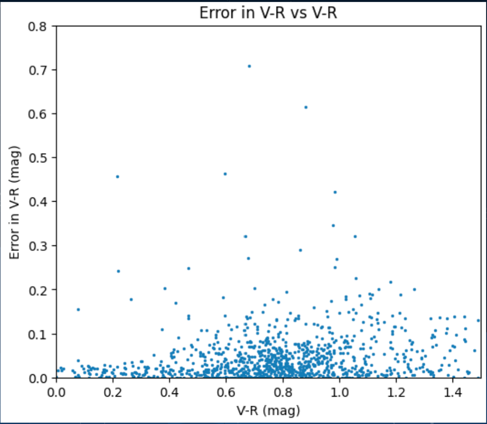
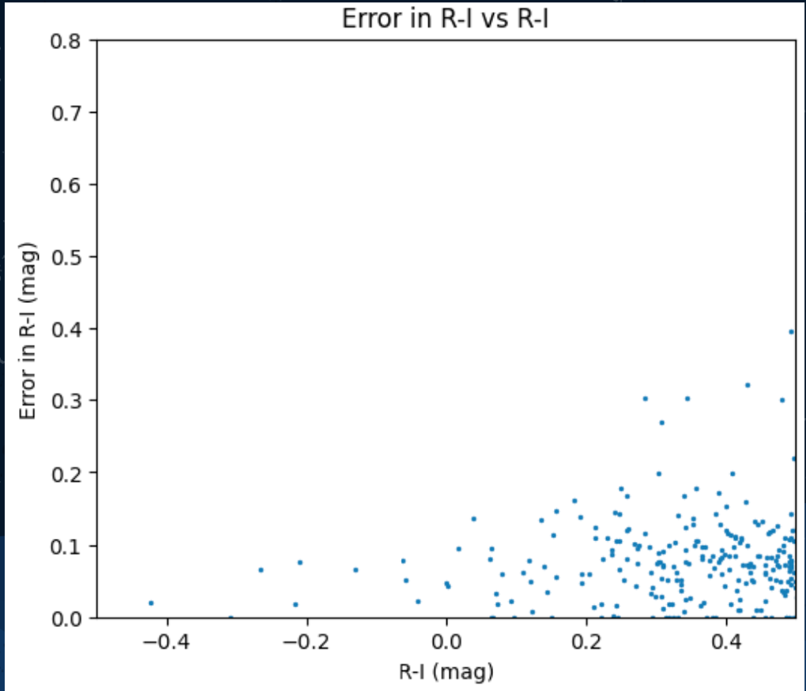
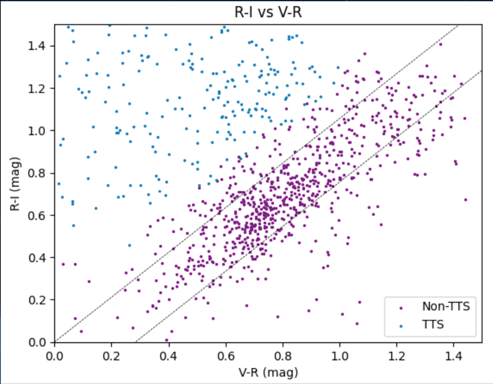
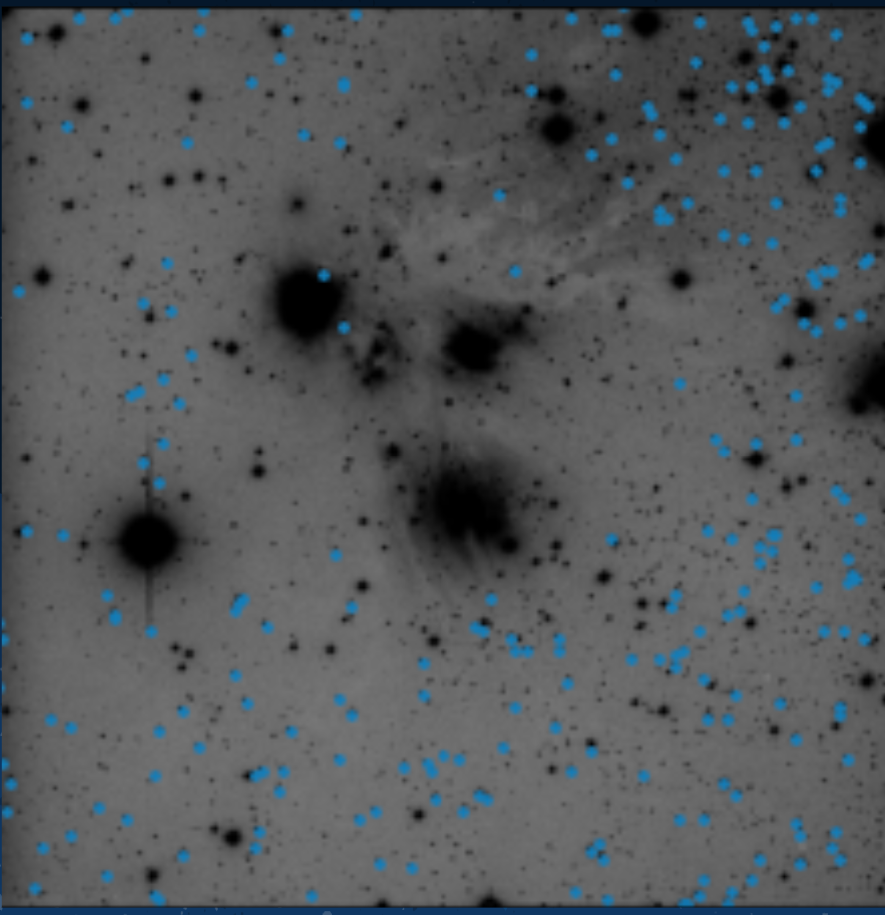
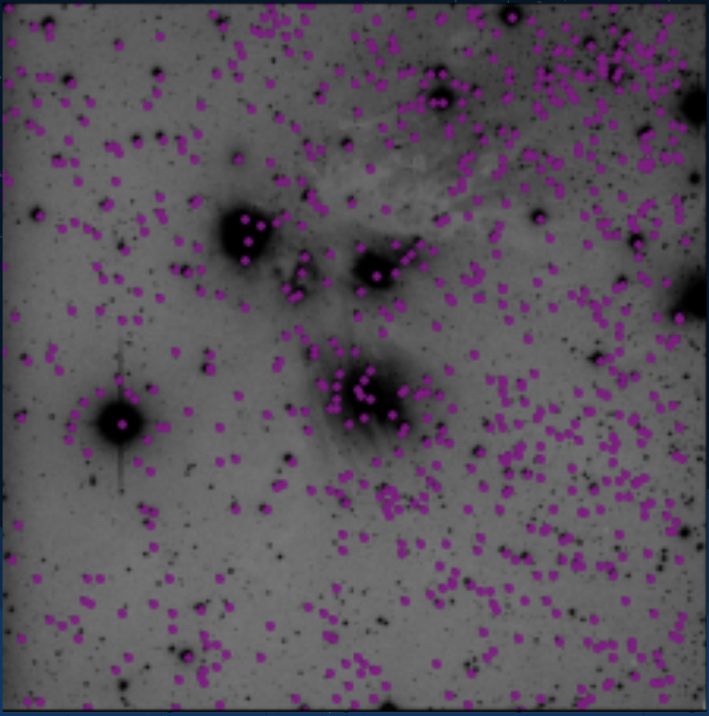

<!doctype html>
<html lang="en">

  <!doctype html>
<html lang="en">

<head>
 <meta charset="utf-8">
  <title> Results </title>
  <link rel="icon" type="image/png" href="images/colorcompos.png">
  <meta name="description" content="Hello World">
  <meta name="author" content="Sanya Arora">
  <meta name="description" content="A description of the search for extraterrestrial life">

  <meta content="text/html" http-equiv="Content-type" />
  <meta content="width=device-width, initial-scale=1" name="viewport" />

      <link href="https://fonts.googleapis.com/css2?family=Roboto&family=Ubuntu:wght@700&display=swap" rel="stylesheet">
  <link rel="stylesheet" href="https://maxcdn.bootstrapcdn.com/bootstrap/3.4.1/css/bootstrap.min.css">

   <script src="https://ajax.googleapis.com/ajax/libs/jquery/3.5.1/jquery.min.js"></script>
  <script src="https://maxcdn.bootstrapcdn.com/bootstrap/3.4.1/js/bootstrap.min.js"></script>
    <link rel="stylesheet" href="css/styles.css">

</head>


</html>
  <!doctype html>
<html lang="en">


<body>

  <nav class="navbar navbar-default">
	  <div class="container-fluid">
      <div class="navbar-header">
	      <a> </a>
	     </div>
	    <ul class="nav navbar-nav">
	    	<li> <a href="#" style="color: #2e2a65; font-family: 'Ubuntu', sans-serif; font-size:20px"> ASTR 230 Final Project</a> </li>
	      <li><a href ="index.html"> Home </a></li>
	      <li> <a href ="about.html"> About Me</a></li>
	      <li class="dropdown">
	        <a class="dropdown-toggle" data-toggle="dropdown" href="#">Project Info
	        <span class="caret"></span></a>
	        <ul class="dropdown-menu">


            <li><a href=background.html>Background and Motivation</a></li>

            <li><a href=data.html> Data Collection Methods </a></li>

            <li><a href=results.html>Results and Conclusions</a></li>

            <li><a href=ref.html>References</a></li>


	        </ul>
	      </li>
	    </ul>
	  </div>
	</nav>


</body>
</html>

<body>

  <h2> Results and Conclusions </h2>
  <div class= "row">


  </div>
      <div class = "container-fluid">
        <div class ="col-lg-12">
          <div class="jumbotron vertical-center" style="background-color: #f2e6dc">


            <p class="text"> Plots of the errors in magnitude measurements, as described in the "data and methods" section, are shown below. As seen from these plots, the vast majority
              of stars had errors below 0.2 mag. I therefore only used the data from points with error below 0.2 in my analysis. <br> </p>
            <figure>
                </img>
                </img>
              <figcaption class="text"> The errors in measurements of V-R (left) and R-I (right)</figcaption>
            </figure>

            <p class="text"> A plot of R-I vs V-R for all the stars I obtained magnitudes for is shown below. As seen from the plot, I identified many T Tauri stars in
              the field. <br> </p>

              <figure>
                  </img>
                <figcaption class="text"> Plot of R-I vs V-R. The dashed black lines identify where main sequnce and giant stars should lie on the graph according to data from
                standard stars. Any stars that were above and to the left of this line, and whose error was outside of the error of the dashed black line, were identified as T Tauri stars. </figcaption>
              </figure>

              <p class="text"> Images of the locations of the stars I identified as T Tauri stars are shown below. As seen from the images, there is a giant hole in the middle of the image depciting the
                locations of the T Tauri stars. This hole is located precisely where the cloud density in the nebula is the highest. Since other pieces of literature and data have indicated that
                T Tauri stars should be the most concentrated in the most dense area of the cloud, I can conlcude that the TTS (T Tauri Stars) must be obscured by the cloud. Because the non-TTS
                (are not obscured by this cloud, I can also conclude that T Tauri stars are much fainter than non-TTS. From these images, there is no apparent clusting of TTS and Non-TTS in the nebula. However,
                 much of this analysis is restricted by the fact that Non-TTS are simply much more visible than TTS. <br> </p>

                 <figure>
                     </img>
                     </img>
                   <figcaption class="text"> Spatial distribution of T Tauri stars (left) and Non-T Tauri Stars (right) </figcaption>
                 </figure>

                 <p class="text"> The main takeaways from this project are as follows. First, T Tauri stars are much fainter and are obscured much more by cloud density than Non-TTS. Second, in the areas of lower
                   cloud density, there is no apparent spatial segregation between TTS and Non-TTS. Finally, more analysis of the region of highest cloud density is needed to determine the spatial differences between
                   TTS and Non-TTS.  <br> </p>


      </div>
    </div>
  </div>

<footer>
<html>

</html>
</footer>
</body>

</html>
